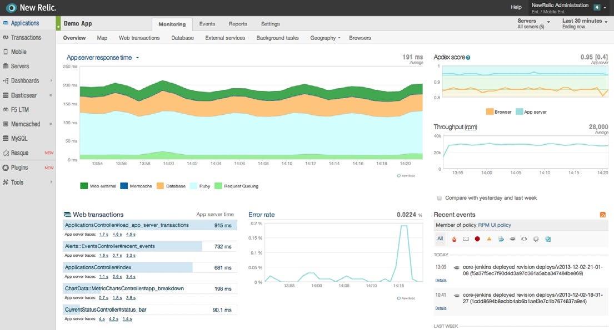
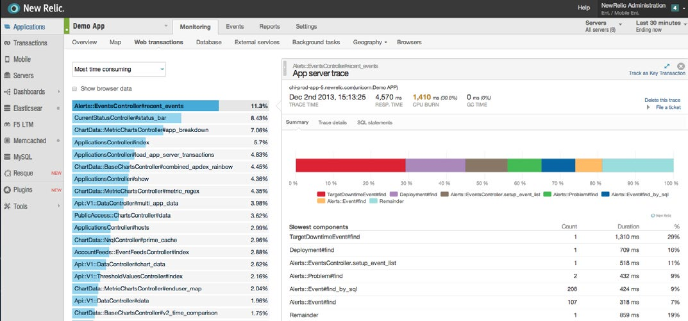
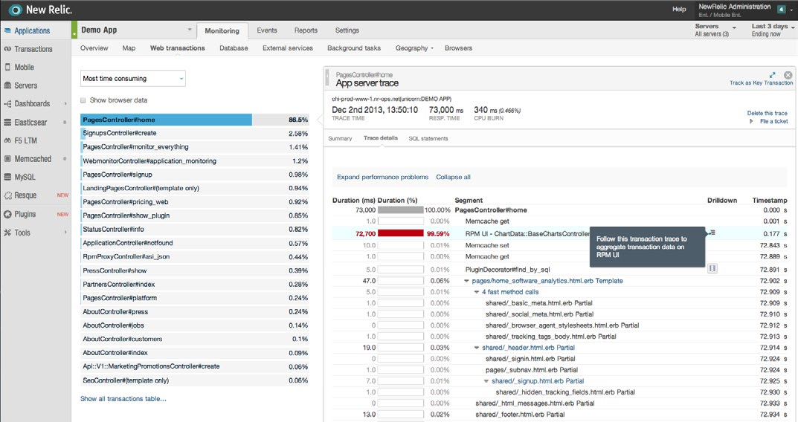
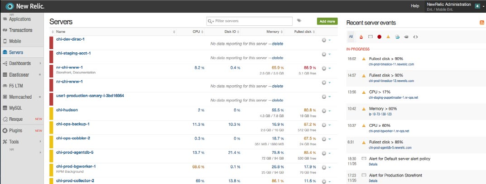
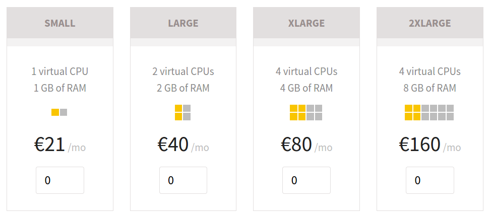
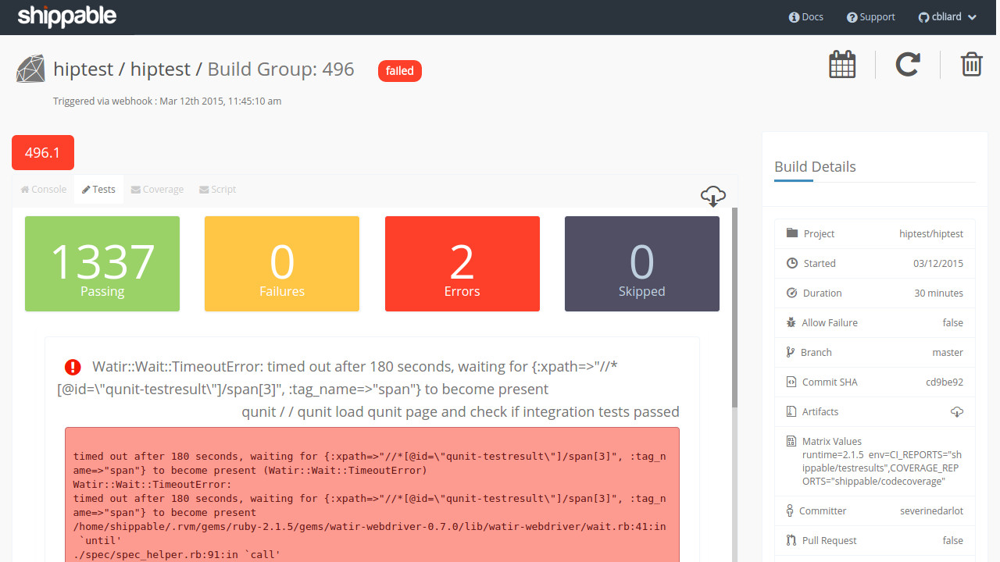

Pour passer en plein écran
et cacher la barre d'adresse
Cliquer ici
Cloud Computing
IaaS, PaaS, SaaS ?
wtf ?...
Pizza !
| Faite maison | Prête à cuire | Livrée à domicile | Sortie restaurant | |
|---|---|---|---|---|
| Couverts | ||||
| Huile piquante | ||||
| Électricité/Gaz | ||||
| Cuisson | ||||
| Four | ||||
| Fromage | ||||
| Garniture | ||||
| Sauce tomate | ||||
| Pâte à pizza | ||||
Photo par djwtwo https://www.flickr.com/photos/djwtwo/9864611814/
Idée originale d'Albert Barron, Sr. Software Client Architect à IBM
Logiciel !
| Sur site | Infrastructure as a Service | Platform as a Service | Software as a Service | |
|---|---|---|---|---|
| Applications | ||||
| Données | ||||
| Runtime | ||||
| Middleware | ||||
| Système (OS) | ||||
| Virtualisation | ||||
| Réseau | ||||
| Stockage | ||||
| Serveurs | ||||
Photo par camknows https://www.flickr.com/photos/camknows/3726757043/
Autres aspects
Cloud public/privé
Paiement à l'usage
Mise à jour en continu
Flexibilité
ATAWAD
Photo par mightyboybrian https://www.flickr.com/photos/mightyboybrian/5732782815/
Plateforme SaaS de gestion de tests d'applications Web et mobile
pour tester au rythme des équipes agiles.
Mesurer, c'est un métier
Photo par orkomedix https://www.flickr.com/photos/orkomedix/4413901705/
“Constantly monitoring your applications
so you don’t have to.”
Vue d'ensemble
Répartition du temps
Arborescence temporelle
Métriques serveurs

“Platform for hosting Ruby and Ruby on Rails apps,
focusing on the developers happiness.”
Prix
20 € offerts à l'inscription
Configuration
Fichier Cloudfile
hiptest:
ruby_version: 2.1.5
environment: production # RAILS_ENV
domains:
- hiptest.shellyapp.com
- hiptest.net
- www.hiptest.net
servers:
app1:
size: small
thin: 2
app2:
size: small
thin: 2
job1:
size: small
whenever: on
delayed_job: 2
store:
size: large
databases:
- postgresql
elasticsearch: on
Modification
hiptest:
ruby_version: 2.1.5
environment: production # RAILS_ENV
domains:
- hiptest.shellyapp.com
- hiptest.net
- www.hiptest.net
servers:
app1:
size: small
thin: 2
app2:
size: small
thin: 2
job1:
size: small
whenever: on
delayed_job: 2
store:
size: large
databases:
- postgresql
elasticsearch: on
hiptest:
ruby_version: 2.1.5
environment: production # RAILS_ENV
domains:
- hiptest.shellyapp.com
- hiptest.net
- www.hiptest.net
servers:
app1:
size: small
thin: 2
app2:
size: small
thin: 2
job1:
size: small
whenever: on
delayed_job: 2
store:
size: small
databases:
- postgresql
esearch:
size: small
elasticsearch: on
On modifie et on pousse
shelly
Commander son appli du bout des doigts
$ gem install shelly
Connecter son dépôt git
$ shelly register christophebliard@hiptest.net
Password: [enter your password]
Password confirmation: [enter your password]
Uploading your public SSH key from /home/cbliard/.ssh/id_rsa.pub
Successfully registered!
Check you mailbox for email address confirmation
$ shelly setup
Setting up example cloud
Running: git remote add shelly git@git.shellycloud.com:example.git
Running: git fetch shelly
Your application is set up.
Déployer son application en production
$ git push shelly master
Counting objects: 17, done.
Delta compression using up to 8 threads.
Compressing objects: 100% (10/10), done.
Writing objects: 100% (10/10), 1.04 KiB | 0 bytes/s, done.
Total 10 (delta 8), reused 0 (delta 0)
---> Received push to cloud 'hiptest'
---> Checking Gemfile
---> Creating code package... done.
---> Deploying your application
---> Deployment on server app1 started
---> Deployment on server app1 finished
---> Deployment on server job1 started
---> Deployment on server app2 started
---> Deployment on server job1 finished
---> Deployment on server app2 finished
---> Deployment successful
To git@git.shellycloud.com:hiptest.git
3d493f5..7e12026 master -> master
Logs du déploiement
$ shelly deploys show last
Log for deploy done on 2015-03-26 at 11:28:03
Starting processes
Eye started! ㋡
Config loaded!
Starting 'rake jobs:work' was successful
Whenever
[write] crontab file updated
# Begin Whenever generated tasks for: /home/app/app/releases/3d493f57740dcc1b6b959faeee30dfbd7e3713de/config/schedule.rb
0 6 * * * /bin/bash -l -c 'cd /home/app/app/releases/3d493f57740dcc1b6b959faeee30dfbd7e3713de && RAILS_ENV=production bundle exec rake intercom:notify --silent >> whenever.log 2>&1'
# End Whenever generated tasks for: /home/app/app/releases/3d493f57740dcc1b6b959faeee30dfbd7e3713de/config/schedule.rb
Running after successful deploy hook
I, [2015-03-26T11:31:22.722120 #3547] INFO -- : Notifying Appsignal of deploy with: revision: 3d493f57740dcc1b6b959faeee30dfbd7e3713de, user: christophebliard@hiptest.net
I, [2015-03-26T11:31:22.777596 #3547] INFO -- : Appsignal has been notified of this deploy!
Informations
$ shelly info
Cloud hiptest:
Region: EU
State: running
Deployed commit sha: 3d493f57740dcc1b6b959faeee30dfbd7e3713de
Deployed commit message: Enhance production exception visibility
Deployed by: christophebliard@hiptest.net
Repository URL: git@git.shellycloud.com:hiptest.git
Web server IP: 178.32.77.22, 178.32.77.22
Usage:
Filesystem:
Current: 2.35 GiB
Average: 2.33 GiB
Database:
Current: 864.65 MiB
Average: 817.97 MiB
Traffic:
Incoming: 3.74 GiB
Outgoing: 8.94 GiB
Total: 12.68 GiB
Statistics:
app1:
Load average: 1m: 0.42, 5m: 0.16, 15m: 0.09
CPU: 0.0%, MEM: 63.5%, SWAP: 6.0%
app2:
Load average: 1m: 0.01, 5m: 0.02, 15m: 0.05
CPU: 0.0%, MEM: 69.4%, SWAP: 6.0%
esearch:
Load average: 1m: 0.00, 5m: 0.01, 15m: 0.05
CPU: 0.0%, MEM: 65.6%, SWAP: 4.9%
job1:
Load average: 1m: 0.00, 5m: 0.01, 15m: 0.05
CPU: 0.0%, MEM: 38.7%, SWAP: 9.3%
store:
Load average: 1m: 0.08, 5m: 0.11, 15m: 0.08
CPU: 0.1%, MEM: 17.3%, SWAP: 5.3%
Logs applicatifs
Voir
$ shelly logs latest
Récupérer
$ shelly logs get
Time: 00:00:03 [====================================] 100% Progress | Time: 00:00:03
Log file saved to hiptest.log-20150327.gz
À une date précise
$ shelly logs get 26-03-2015
Time: 00:00:05 [====================================] 100% Progress | Time: 00:00:05
Log file saved to hiptest.log-20150326.gz
Accès ssh
$ shelly ssh
app@app2.hiptest [production] ~/app/current $
Sur un hôte particulier
$ shelly ssh --server job1
app@job1.hiptest [production] ~/app/current $
Console
Rails
$ shelly console
Loading production environment (Rails 4.0.13)
2.1.5 :001 >
PostgreSQL
$ shelly dbconsole
psql (9.3.5)
Type "help" for help.
hiptest=#
Backups de base de données
Lister
$ shelly backup list -c hiptest
Showing only last 10 backups.
Use --all or -a option to list all backups.
Filename | Size | State
2015.03.23.17.02.26.hiptest.postgresql.tar | 80 MiB | completed
2015.03.24.05.03.10.hiptest.postgresql.tar | 80 MiB | completed
2015.03.24.17.02.32.hiptest.postgresql.tar | 80 MiB | completed
2015.03.25.05.05.24.hiptest.postgresql.tar | 80 MiB | completed
2015.03.25.17.02.51.hiptest.postgresql.tar | 80 MiB | completed
2015.03.26.05.10.46.hiptest.postgresql.tar | 80 MiB | completed
2015.03.26.10.15.33.hiptest.postgresql.tar | 80 MiB | completed
2015.03.26.17.02.43.hiptest.postgresql.tar | 80 MiB | completed
2015.03.27.05.04.54.hiptest.postgresql.tar | 80 MiB | completed
Récupérer le dernier
$ shelly backup get
Time: 00:00:34 [================================] 100% Progress | Time: 00:00:34
Backup file saved to 2015.03.27.05.04.54.hiptest.postgresql.tar
Lancer une sauvegarde
$ shelly backup create postgresql
Backup requested. It can take up to several minutes for the backup process to finish.
$ shelly backup list
Showing only last 10 backups.
Use --all or -a option to list all backups.
Filename | Size | State
2015.03.24.17.02.32.hiptest.postgresql.tar | 80 MiB | completed
2015.03.25.05.05.24.hiptest.postgresql.tar | 80 MiB | completed
2015.03.25.17.02.51.hiptest.postgresql.tar | 80 MiB | completed
2015.03.26.05.10.46.hiptest.postgresql.tar | 80 MiB | completed
2015.03.26.10.15.33.hiptest.postgresql.tar | 80 MiB | completed
2015.03.26.17.02.43.hiptest.postgresql.tar | 80 MiB | completed
2015.03.27.05.04.54.hiptest.postgresql.tar | 80 MiB | completed
2015.03.27.17.02.20.hiptest.postgresql.tar | 80 MiB | completed
. | | in progress
# quelques minutes plus tard...
$ shelly backup list
Showing only last 10 backups.
Use --all or -a option to list all backups.
Filename | Size | State
2015.03.24.17.02.32.hiptest.postgresql.tar | 80 MiB | completed
2015.03.25.05.05.24.hiptest.postgresql.tar | 80 MiB | completed
2015.03.25.17.02.51.hiptest.postgresql.tar | 80 MiB | completed
2015.03.26.05.10.46.hiptest.postgresql.tar | 80 MiB | completed
2015.03.26.10.15.33.hiptest.postgresql.tar | 80 MiB | completed
2015.03.26.17.02.43.hiptest.postgresql.tar | 80 MiB | completed
2015.03.27.05.04.54.hiptest.postgresql.tar | 80 MiB | completed
2015.03.27.17.02.20.hiptest.postgresql.tar | 80 MiB | completed
2015.03.27.17.09.30.hiptest.postgresql.tar | 80 MiB | completed
Et d'autres...
$ shelly help
Tasks:
shelly add # Add a new cloud
shelly backup <command> # Manage database backups
shelly check # Check if application fulfills Shelly Cloud requirements
shelly config <command> # Manage application configuration files
shelly console # Open application console
shelly database <command> # Manage databases
shelly dbconsole # Run rails dbconsole
shelly delete # Delete the cloud
shelly deploy <command> # View deploy logs
shelly endpoint <command> # Manage application HTTP(S) endpoints
shelly file <command> # Upload and download files to and from persistent storage
shelly help [TASK] # Describe available tasks or one specific task
shelly info # Show basic information about cloud
shelly list # List available clouds
shelly login [EMAIL] # Log into Shelly Cloud
shelly logout # Logout from Shelly Cloud
shelly logs <command> # View application logs
shelly maintenance <command> # Mange application maintenance events
shelly mongoconsole # Run MongoDB console
shelly open # Open application page in browser
shelly organization <command> # View organizations
shelly rake TASK # Run rake task
shelly redeploy # Redeploy application
shelly redis-cli # Run redis-cli
shelly register [EMAIL] # Register new account
shelly setup # Set up git remotes for deployment on Shelly Cloud
shelly ssh # Log into virtual server
shelly start # Start the cloud
shelly stop # Shutdown the cloud
shelly user <command> # Manage collaborators
shelly version # Display shelly version
Options:
[--debug] # Show debug information
-h, [--help] # Describe available tasks or one specific task
Ship fast, evolve faster
Configuration • shippable.yml
# Configuration file for Shippable
# Shippable provides continuous integration in the cloud
build_environment: ubuntu1204
language: ruby
rvm:
- 2.1.5
# Enable cached containers, reset with [reset_minion] in commit message.
cache: true
# Enable archiving the shippable/ directory as an artifact to download
archive: true
services:
# sets elasticsearch on localhost, port 9200
- elasticsearch
script:
- rm -f log/test.log
- bin/rspec --format RspecJunitFormatter --out shippable/testresults/rspec.xml
# http://docs.shippable.com/en/latest/config.html#email-notification
notifications:
email:
recipients:
- devs@hiptest.net
on_success: change
on_failure: always
Personnalisation • shippable.yml
env:
global:
# devise_secret_token
- secure: pGUq5116iDVWh6R4/ZOfPxIZj8Vqn4FXS6jmZKyHk99ln20EWX4Ie2xsPSwgFJcOFA==
branches:
only:
- master
before_install: # make chromedriver available
- "curl -o /tmp/chromedriver.zip -L http://chromedriver.storage.googleapis.com/2.10/chromedriver_linux64.zip"
- "unzip -o /tmp/chromedriver.zip -d /home/shippable/bin"
- "chmod +x /home/shippable/bin/chromedriver"
- "printf '#!/bin/bash\nexec /usr/bin/chrome --no-sandbox --disable-gpu \"$@\"\n' | sudo tee /usr/bin/google-chrome"
- "sudo chmod +x /home/shippable/bin/chromedriver /usr/bin/google-chrome"
before_script:
- "export DISPLAY=:99.0"
- "/etc/init.d/xvfb start"
after_script:
- "/etc/init.d/xvfb stop"
after_success: # push to production
- "git push shelly master"
after_failure: # save some test logs
- "mv log/test.log shippable/"
Résultats


Que retenir de notre évolution ?
Maintenance fortement réduite
Meilleure focalisation sur notre métier
Coût similaire
Plus de fonctionnalités
Plus flexible
Moins de contrôle
Sécurité des données
Photo par HorsePunchKid https://www.flickr.com/photos/horsepunchkid/4393669704/